Dylan Bawa
CSCE 242: Client-Server Computing
Assignments
Assignment 1 - Basic HTML
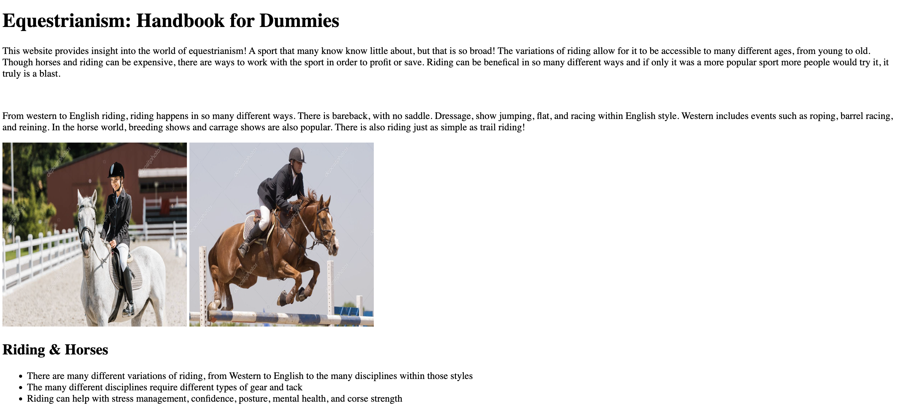For the Basic HTML assignment, I created a website that goes over the sport of equestrianism. It includes elements such as a table, images, and paragraphs. The table goes into the different types of riding and the gear used for those types. Broader information is also included, such as the varieties of riding and benefits of it.
Assignment 2 - Basic CSS
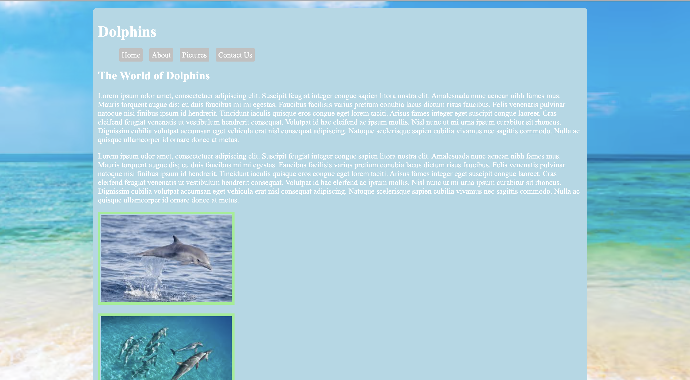For the Basic CSS assignment, I went more in depth in terms of the style. There is a background image, navigation bar with the hover feature, a color palette, and borders. A table was included in this website as well as style features such as background color, text color, and content alignment.
Assignment 3 - Page Layout
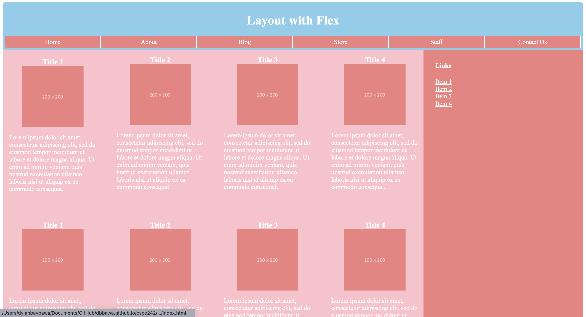For the Page Layout assignment, I utilized style features, flexbox, and media query to achieve a provided website layout. The website features various colors, alignments, and elements to achieve the landscape and vertical layout.
Assignment 4 - Recreate CSS Page
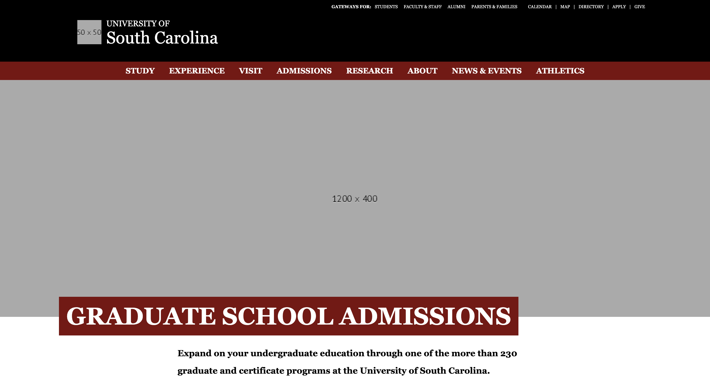For the Basic HTML assignment, I created a website that goes over the sport of equestrianism. It includes elements such as a table, images, and paragraphs. The table goes into the different types of riding and the gear used for those types. Broader information is also included, such as the varieties of riding and benefits of it.
Assignment 5 - Introduction to JavaScript
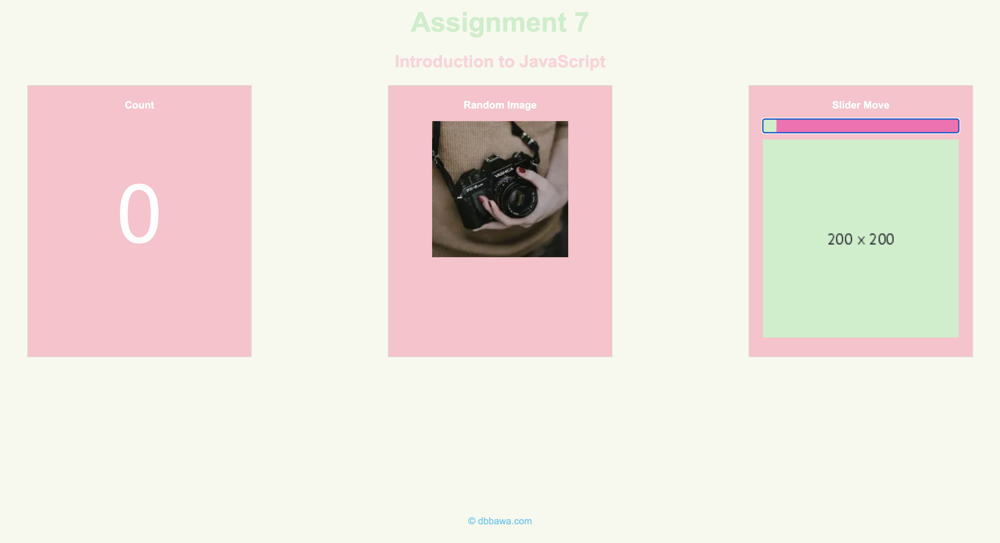For the Introduction to JavaScript assignment, I created a website with 3 columns, a header, and subheader. Each of the columns were unique as to the functions they perform using JavaScript. Column 1 was a counter, column 2 was a image refresher, and column 3 was a image slider. I was able to use JavaScript, HTML, and CSS all together.
Assignment 6 - JavaScript: Conditionals
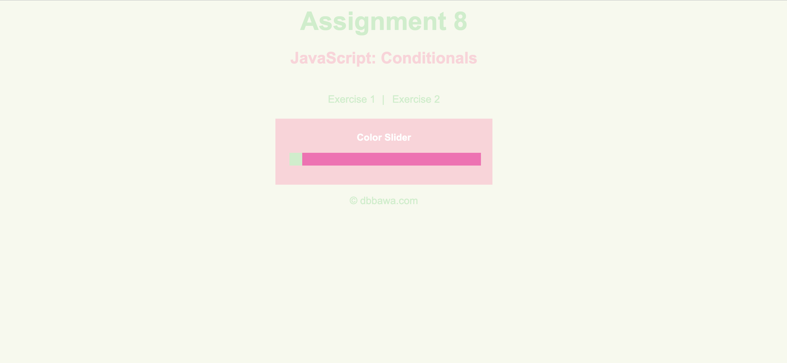For the Conditionals assignment, I created a website with 2 exercises. Each displayed only when on that tab. Exercise 1 is a slider which goes through 3 different types of reds, turning the whole slider box that color. In each different type of red there is a message associated with it. In exercise 2, there is a photo chooser in which you chose a photo size and a photo of that size is displayed.
Assignment 7 - JavaScript: Loops

For the Loops assignment, I created a website that allows the user to create stars. The user is able to pick the amount of stars generated, the stars will not leave the black space, and when a star is clicked it will tell the user what number the star was in the generation timeline. If the user does not enter a positive number, the user will get an error.
Assignment 8 - JavaScript: Arrays
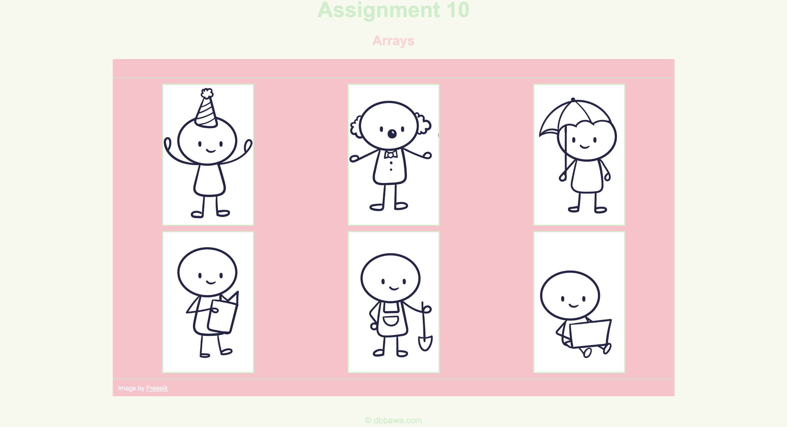For the Arrays assignment, I created an associative array with 6 images. When each image is clicked, the image description and title is displayed at the top. The images are credited below, and each image is a character doing a different action.
Assignment 9 - JavaScript: Classes
Projects
Project 1 - Topic Selection
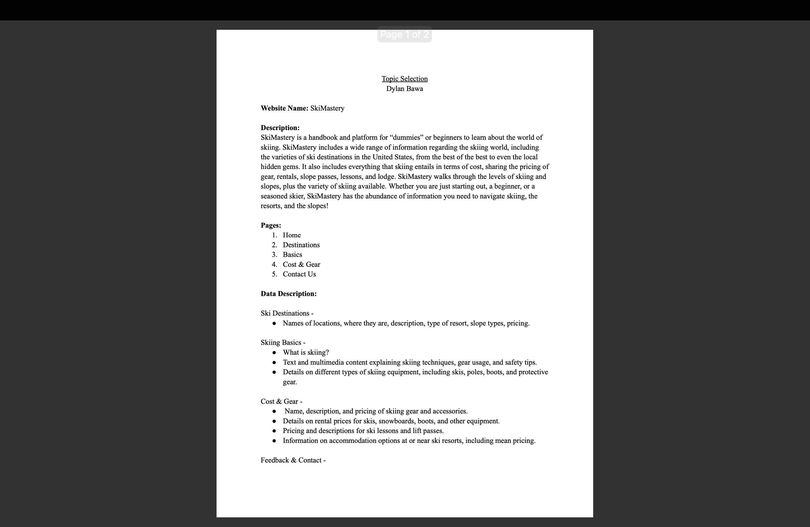For the Topic Selection, I created a PDF outlining my website. I covered what the website is, what it is about, what it will cover, and the pages. I also included data descriptions about each tab, and administrative notes. The PDF will help outline what the website will look like.
Project 2 - Wireframe
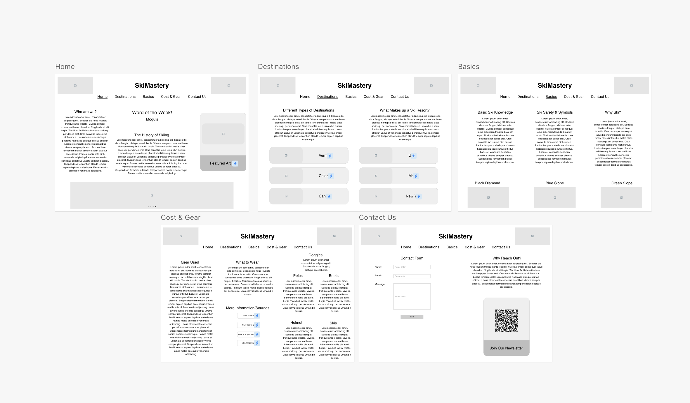For the Wireframe, I created a mock creation of what my website will physically look like. I was able to layout what each tab will look like, and how everything will be spaced out and organized. This will make the creative aspect of building the website flow easily when creating.
Project 3 - HTML and CSS
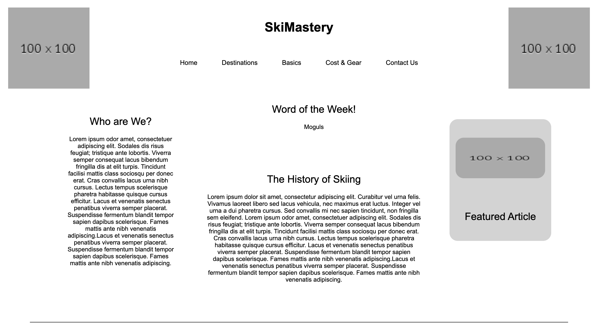For the HTML and CSS, I create the outline of my website. I created the html and css aspects of it to make sure the layout was ideal. Not a ton of thought was put into the looks of the website yet, this is yet to come. However, having the bones of everything will help make sure I am on the right track.
Project 4 - Colors, Pictures, and Text
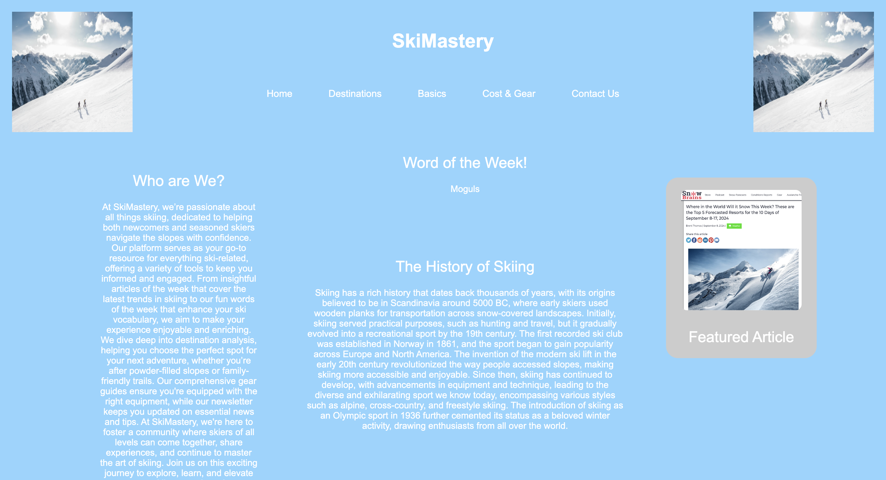For the adding of colors, images, and text to my website, I worked to add images that correctly communicated my goal and theme of my website. It was vital to make sure the images fit correctly as well as making the text relevent and informative. I added colors and design that would portray the theme of skiing.